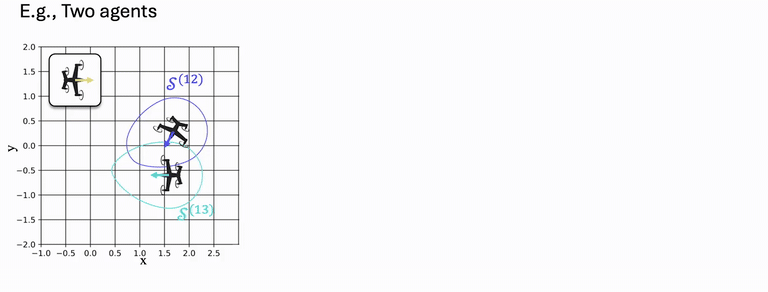
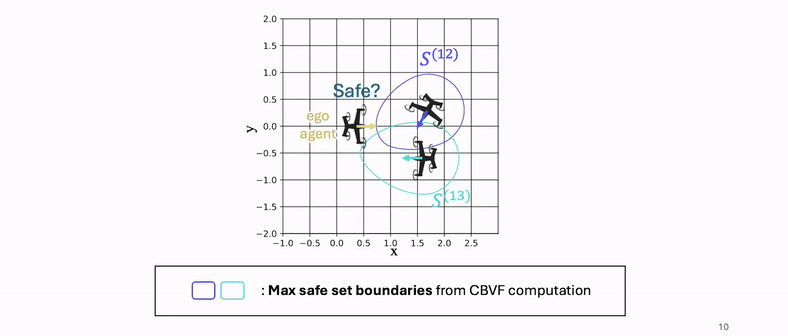
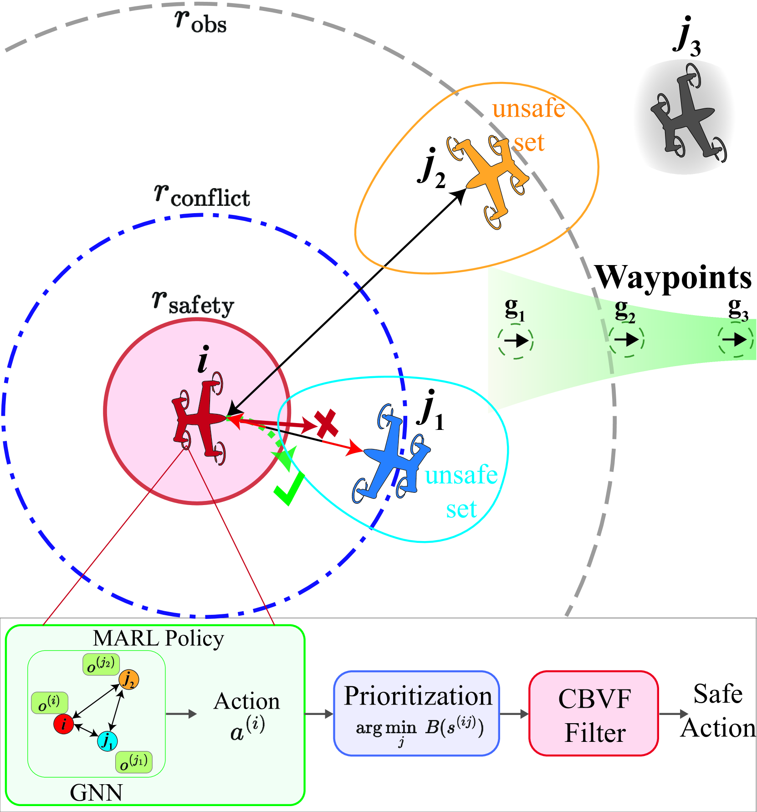
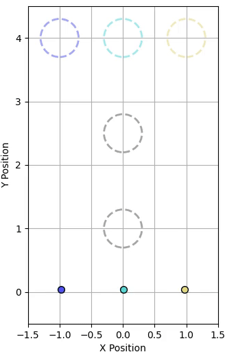
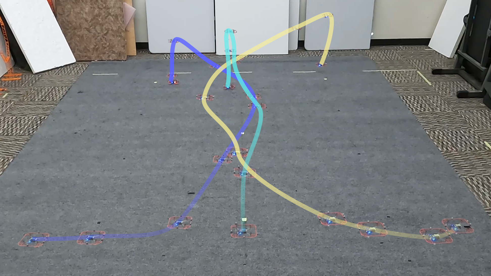
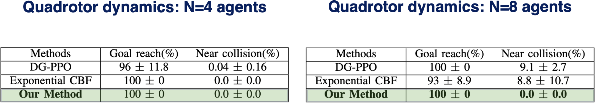

- Jason J. Choi* UC Berkeley
- Jasmine Jerry Aloor* MIT
- Jingqi Li* UC Berkeley
- Maria G. Mendoza UC Berkeley
- Hamsa Balakrishnan+ MIT
- Claire Tomlin+ UC Berkeley
* denotes equal contribution
+ denotes equal advising
Abstract
Preventing collisions in multi-robot navigation is crucial for deployment.
This requirement hinders the use of learning-based approaches, such as multi-agent reinforcement learning (MARL),
on their own due to their lack of safety guarantees. Traditional control methods, such as reachability and
control barrier functions, can provide rigorous safety guarantees when
interactions are limited only to a small number of robots.
However, conflicts between the constraints faced by different agents pose a challenge to safe multi-agent coordination.
To overcome this challenge, we propose a method that integrates multiple layers of safety by combining MARL with safety filters.
First, MARL is used to learn strategies that minimize multiple agent interactions, where multiple indicates more than two.
Particularly, we focus on interactions likely to result in conflicting constraints within the engagement distance.
Next, for agents that enter the engagement distance, we prioritize pairs requiring the most urgent corrective actions.
Finally, a dedicated safety filter provides tactical corrective actions to resolve these conflicts.
Crucially, the design decisions for all layers of this framework are grounded in reachability analysis and
a control barrier-value function-based filtering mechanism.
We validate our Layered Safe MARL framework in 1) hardware experiments using Crazyflie drones and
2) high-density advanced aerial mobility (AAM) operation scenarios, where agents navigate to designated waypoints while avoiding collisions.
The results show that our method significantly reduces conflict while maintaining safety without sacrificing much efficiency
(i.e., shorter travel time and distance) compared to baselines that do not incorporate layered safety.
Motivation
Coordinating multiple autonomous agents in a shared space is essential for a variety of robotics applications, yet safety and efficiency remain fundamentally at odds in dense multi-agent settings.
- Collision-free operation is critical in multi-robot tasks such as:
- Formation control [1]
- Multi-robot payload transport [2]
- Autonomous navigation [3]
- Pairwise safety constraints (e.g., between two agents) are tractable, but:
- When multiple agents interact simultaneously, their safety constraints may conflict.
- Resolving one constraint may violate another, especially in close proximity.
- Safe control methods like reachability analysis and control barrier functions:
- Offer formal guarantees for small-scale interactions.
- But do not scale well to dense multi-agent systems due to computation limits.
- Multi-Agent Reinforcement Learning (MARL) enables:
- Learning emergent behaviors in complex environments.
- Optimizing task performance under uncertainty and high dimensionality.
- But lacks formal safety guarantees.
Our Solution: We propose a Layered Safety Architecture that unifies:
- The theoretical rigor of CBVFs (Control Barrier-Value Functions), providing certified pairwise safety.
- The scalability and adaptability of MARL, helping to avoid unsafe multi-agent interactions in the first place.
Control Barrier-Value Functions (CBVF)
Illustration of CBVF: Combining reachability analysis and control barrier functions for safe two-agent interaction.
- In this work, we use a model-based safety certificate called the Control Barrier-Value Function (CBVF), which combines the benefits of Hamilton-Jacobi Reachability and Control Barrier Functions.
- CBVFs provide a maximal safe set within the constraint set from its reachability foundation, while offering a smooth safety filtering mechanism similar to Control Barrier Functions.
- They offer hard safety guarantees when computable for a given system — we use this to generate pairwise safety filters between two agents.
- A key limitation: computational infeasibility for higher-dimensional systems (e.g., 3+ agents with relative dynamics).
- Thus, we apply CBVFs to pairwise interactions as building blocks for safe multi-agent coordination.
- With only two agents, a single collision-avoidance constraint exists
- Can be resolved efficiently using a safety filter
- With multiple nearby agents, constraints may conflict:
- Resolving one pair's constraint may violate another's
- Leads to multi-agent constraint conflicts in dense environments
Two-Agent Scenario
Single constraint, easily managed with a safety filter.
Three-Agent Scenario
Conflicting constraints create coordination challenges.
Safety filtering works well for pairs — but with 3+ agents, actions may conflict. Our method proactively avoids such configurations using learned behaviors, then falls back to safety filtering when needed.
Method: Distance-Based Interaction Zones
In order to anticipate and mitigate potential conflicts between agents, we define multiple distance-based regions that characterize the nature and urgency of their interaction:
- Safe Zone: Agents are far enough apart to require no interaction or coordination.
- Observation Zone: Agents are within each other’s sensing range. Coordination may become necessary soon.
- Potential Conflict Zone: Agents are close enough that their intended trajectories may intersect. Requires active safety filtering or learned conflict-avoidance behaviors.
- Collision Zone: Imminent collision risk. Safety filter must intervene to override unsafe actions immediately.
These zones allow us to blend reactive safety control and proactive learned coordination depending on the spatial context.
Illustration of distance-based zones between agents, indicating when safety intervention is necessary.
Method: Safety-Informed Multi-Agent RL (MARL)
Our approach integrates Multi-Agent Reinforcement Learning (MARL) with model-based safety to enable robust and safe behavior in dense multi-agent scenarios. It consists of three core layers:
Overview of our Layered Safety architecture: (A) Learning-based waypoint navigation, (B) CBVF prioritization, (C) CBVF safety filtering.
Experiments and Results
Conflict Zones & Safe Sets across Dynamics
The CBVF enables the computation of conflict zones and safe sets for agents with different dynamics. Below we show results for two types of aerial vehicles:
1. Quadrotor
Can hover & hold position for safety
2. Wingborne Air Taxi
Needs active turn for safety (vmin > 0)
Environments: 1. Safe Navigation of Quadrotors Through Waypoints
We evaluate our method on the following quadrotor task, comparing a safety-blind MARL policy with a safety-informed MARL policy.
1. Safety-blind MARL (with safety filter)
2. Safety-informed MARL
Safety-blind Experiment

Plotted Paths
Safety-informed Experiment

Plotted Paths
Crazyflie hardware experiment with the MARL policy learned by our method: Trajectory Plot
Performance Comparison
Our method outperforms other state-of-the-art safety methods in terms of goal reaching rate and number of near collisions. We also test cases with higher number of agents (up to 8) and show that our method scales well. The table below summarizes the results:
Environments: 2. Autonomous Urban Air Mobility Traffic Management – Air Taxi Operation
We simulate UAM operations at peak density, with each vertiport supporting 125 aircraft/hour (2 operations/min). Air corridors are separated by 1500 ft vertical spacing, representing a realistic high-demand aerial network.
Scenario 1: Merging
Vehicles depart from various locations in the Bay Area, merging into an aerial corridor toward San Francisco.
Safety Blind Merging
Safety Informed Merging
Scenario 2: Intersection
Two high-volume air traffic streams intersect mid-air over the Bay Area, testing agents' conflict resolution in constrained airspace.
Safety Blind Intersection

Safety Informed Intersection